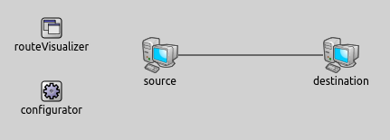
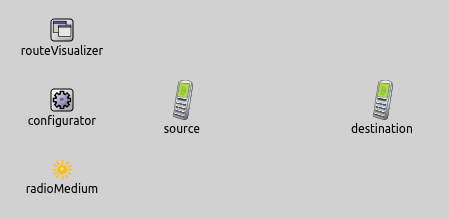
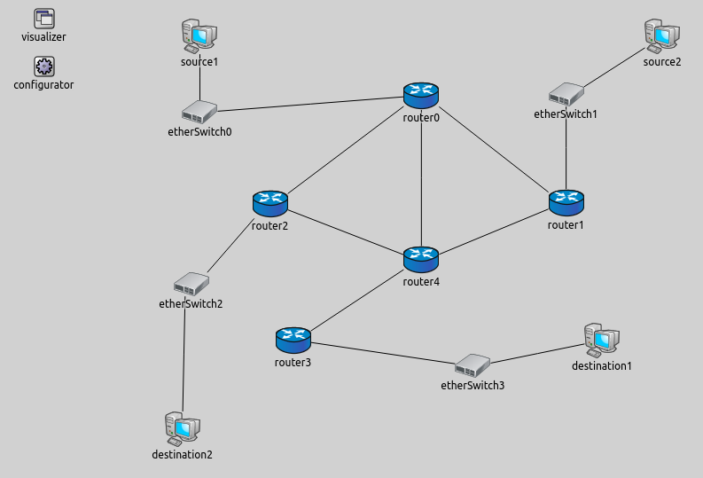
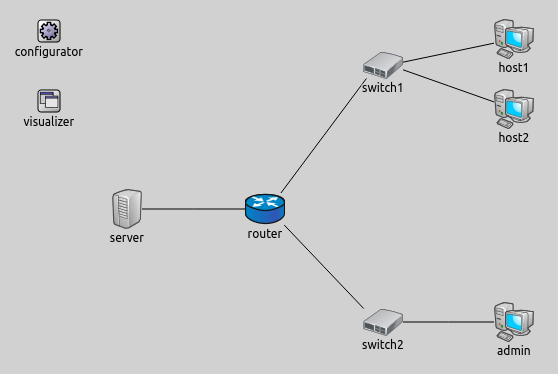

The transport layer offers peer-to-peer and end-to-end connection between two processes on remote hosts. This layer is the first one which breaks the information data in to smaller units called segments. By visualizing transport routes, we can see the segments' path between the transport layers of the corresponding devices.
The example consists of four simulation models, each demonstrating different features of transport route visualization.
The TransportRouteVisualizer keeps track of active routes in the transport layer. A route between two node is considered active if a transport layer segment is completely sent recently between their transport layers. Active routes are not displayed by default, we can enable their vsisualization by switching the displayRoutes parameter to true.
The links are represented visually by solid arrows. The arrow's starting point is the source node and its endpoint is the destination node.
The visualizer has filtering parameters, like nodeFilter and packetFilter. Using these we can specify which routes are shown. By default all nodes and all packets are considered for displaying transport routes. It is possible to use logical expressions in the values of the filter parameters, e.g nodeFilter = "host1 or host2" shows the routes between the nodes that called host1 and host2.
In this configuration we show how to enable the visualization with its default settings. We visualize transport routes both in a wired and in a wireless network.
The wired and the wireless network are very similar:


Both networks contain two endpoints, a TransportRouteVisualizer and an IPv4NetworkConfigurator module. The wireless network includes an Ieee80211ScalarRadioMedium too.


This example only demonstrated the key features of phyisical link visualization. For more information, refer to the TransportRouteVisualizer NED documentation.